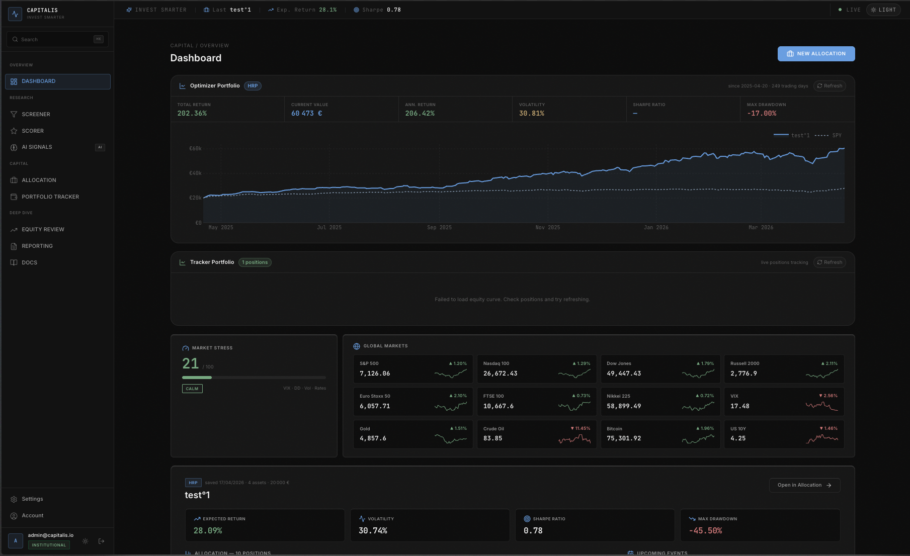
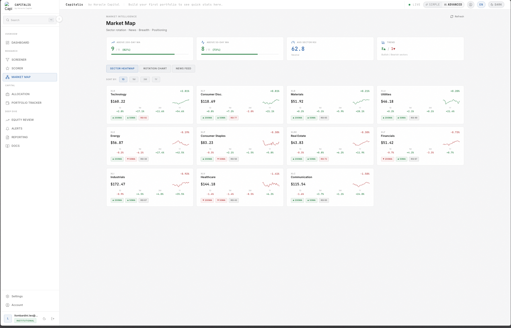
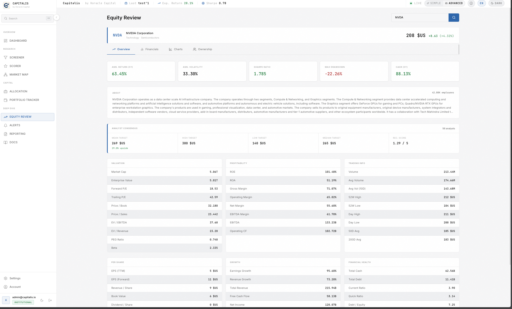

L'infrastructure institutionnelle,
pour les investisseurs indépendants.
Capitalis centralise la donnée macroéconomique, quantitative et fondamentale. De la génération d'idées à l'audit de performance, pilotez votre portefeuille avec une rigueur absolue.







Un Workflow Sans Faille
Chaque étape de votre processus d'investissement a été déconstruite et optimisée. Ne laissez plus de place au hasard.
Screener Multicritère
Filtrez l'univers d'investissement mondial en quelques secondes. Croisez les données macroéconomiques, fondamentales et techniques pour isoler instantanément les actifs qui respectent strictement vos paramètres.
Scoring Quantitatif
Éliminez le biais émotionnel. Notre moteur quantitatif évalue et classe chaque opportunité selon une matrice multifactorielle stricte. Concentrez votre capital uniquement sur ce que la data valide.
Market Mapping
Visualisez la dynamique globale des marchés en un coup d'œil. Identifiez les rotations sectorielles, les flux de capitaux et les anomalies de valorisation avant qu'elles ne deviennent évidentes pour le consensus.
Allocation & Pondération
Construisez un portefeuille résilient. Optimisez le couple rendement/risque de vos positions en ajustant dynamiquement vos pondérations selon les corrélations historiques et votre tolérance au drawdown maximal.
Equity Review
Passez chaque actif au microscope. Accédez aux états financiers agrégés, à la structure de la dette, aux ratios de valorisation et aux signaux techniques dans une interface de due diligence unifiée.
Reporting & Audit
Confrontez vos stratégies à la réalité. Auditez l'efficacité de vos choix d'allocation, analysez l'attribution de vos gains et générez des rapports de performance de grade institutionnel en un clic.
Arrêtez de naviguer entre
10 outils différents.
Votre temps doit être alloué à la prise de décision, pas à l'extraction de données ou à la maintenance de fichiers Excel. Capitalis unifie la chaîne de valeur d'un gérant de fonds dans un environnement unique.
- Flux de données premium en temps réel (Macro & Equities).
- Modèles de scoring pré-calibrés prêts à l'emploi.
- Gestion du risque et calcul des expositions automatisés.

Accédez à la Bêta Privée
Rejoignez la liste d'attente pour être parmi les premiers à tester Capitalis. Les places sont limitées pour assurer un accompagnement optimal et recueillir vos retours.